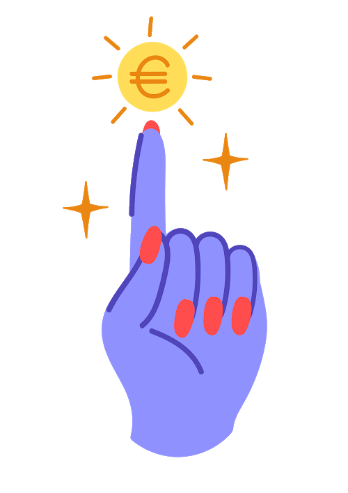
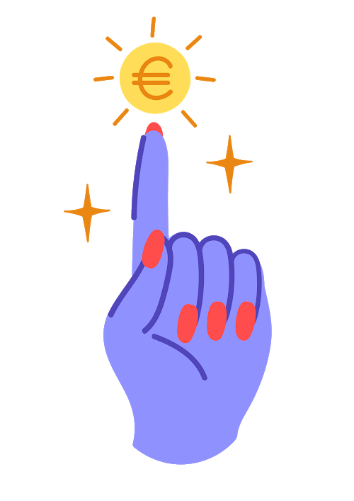
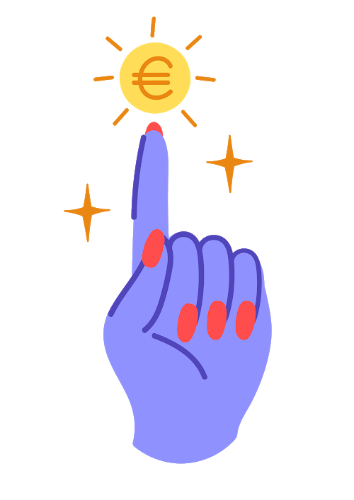

I'm Steevux
a Care expert.
 

a Care expert.

Je suis Care expert, fasciné par le développement des personnes et l'innovation soucieux d'apporter un impact social positif.

Au cours de mes expériences professionnelles récentes, j'ai acquéri des connaissances et des compétences en gestion de projet en aidant des équipes à créer leurs propres projets et à accroître leurs compétences.
J'ai développé mes qualités telles que l'intelligence collective, la créativité, la pensée critique et la résolution de problèmes complexes.

J'ai co-fondé et développé une branche de l'association internationale d'entrepreneuriat social "Enactus" sur mon campus à Sophia Antipolis.
Engagée et empathique, j'ai soutenu, géré les équipes, aidé à développer leurs propres projets et travaillé à la pérennité de l'association.
Contactez-moi, qu'on discute autour d'un peu de vin rouge & fromages.
CONTACT ME